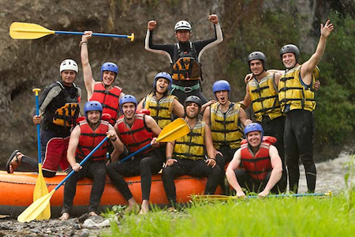
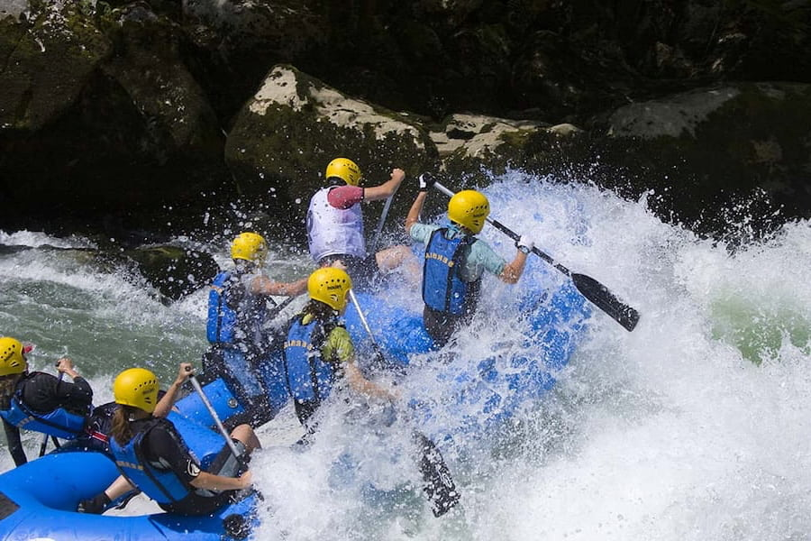
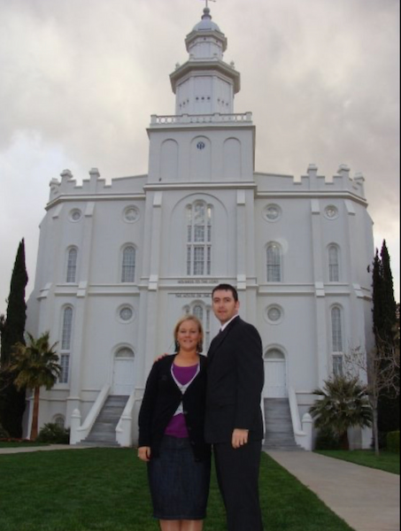
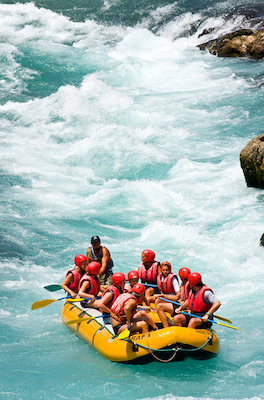
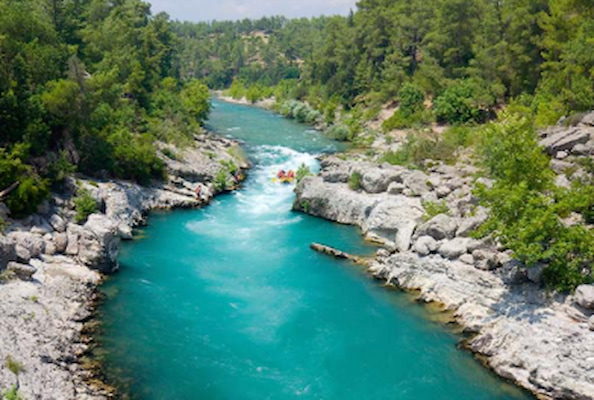
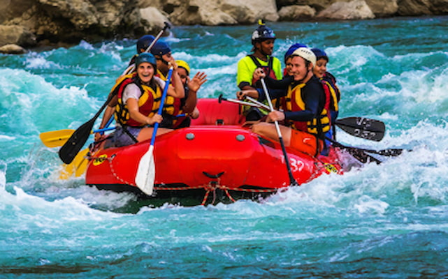
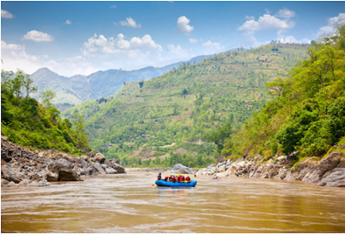
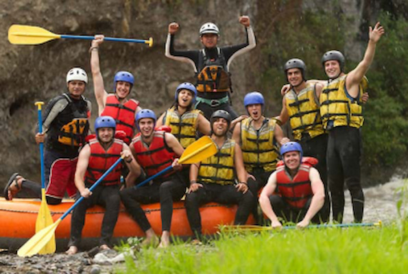

Our Mission

It's all about you! Our goal is to provide an everlasting experience rafting through the Grand Canyon and making memories that will remain with you for a lifetime. Let me ask you, are you ready for an adventure?



It's all about you! Our goal is to provide an everlasting experience rafting through the Grand Canyon and making memories that will remain with you for a lifetime. Let me ask you, are you ready for an adventure?
Snowflake Rapids Rafting LLC came to be after friends Neal Kammeyer and Holly Coatney were set up on a blind date and went White Water Rafting back in 2009.

Fast forward a year and they were married and still carried the same passion for White Water Rafting! Fast forward to 2016 when Snowflake Rapids Rafting LLC was born out of a hope and dream to bring the same love for white water rafting to others.




